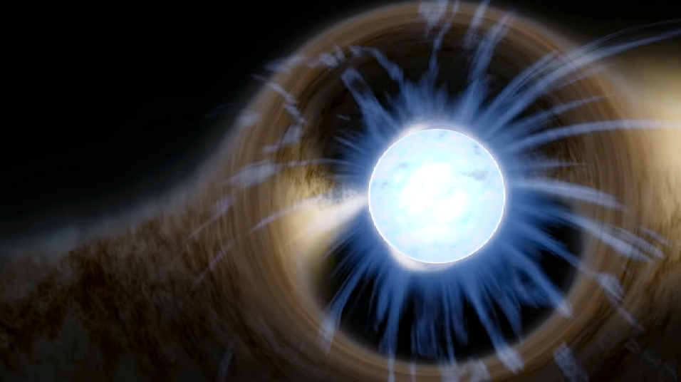

A small presentation about Astronomy.
What im about to talk. is (Astronomy).
Astronomy. is a natural science
that studies celestial objects and phenomena.
It uses mathematics,Physics and chemistry
Objects of interesting are.
Planets,
moons,
stars,
nebulae,
galaxies,
comets,
black holes.
Astronomy is one of the oldest natural sciences.
The early civilizations in recorded history made methodical observations of the night sky. These include the Babylonians, Greeks, Indians, Egyptians, Chinese, Maya,
Nowadays, professional astronomy is often said to be the same as astrophysics.
Astronomy is one of the few sciences in which amateurs play an active role. This is especially true for the discovery and observation of transient events. Amateur astronomers have helped with many important discoveries, such as finding new comets.
----------------------------------------------------------------------------------------------------------------------------------------------------------------------------------------------------------------------------------------------------------
Just IMAGINE a life on other planet. Meet other life forms. become friends.
There maybe 39 civilisations.
Or the Black Holes!. a fantastic phenomenon
A gravity monsters. Spinning,calm or massive.
First ever black holes was shot in 2019. By Stephen Hawkings calculations

in 2020 or 2019 was made first ilustration of space curvature near black hole.

---------------------------------------------------------------------------------------------------------------------------------------------------------------------------------------------------------------------------------------------------------
Or other astronomical Phenomenon. a star death. a NEUTRON star
A dead star with huge gravity. Fastest spinning object

A little about neutron stars
**A neutron star is the collapsed core of a massive supergiant star, which had a total mass of between 10 and 25 solar masses, possibly more if the star was especially metal-rich.**
**Neutron stars are the smallest and densest stellar objects, excluding black holes and hypothetical white holes, quark stars, and strange stars.**
There are thought to be around one billion neutron stars in the Milky Way
{Official NASA information about neutron stars.}

---------------------------------------------------------------------------------------------------------------------------------------------------------------------------------------------------------------------------------------------------------
Or the beautiful objects. Nebulas.